물류관리사-1교시 (2021-07-17 기출문제)
1과목: 물류관리론
1. 공공적, 사회경제적, 개별기업 관점에서 물류의 역할 또는 기능으로 옳지 않은 것은?
- 물류 생산성 향상 및 비용절감을 통해서 물가상승을 억제한다.
- 물류 합리화를 통해 유통구조 선진화 및 사회간접자본 투자에 기여한다.
- 고객요구에 따라서 생산된 제품을 고객에게 전달하고 수요를 창출한다.
- 생산자와 소비자 사이의 인격적 유대를 강화하고 고객서비스를 높인다.
- 공급사슬관리를 통해 개별 기업의 독자적 경영 최적화를 달성한다.
(정답률: 38%)

2. 유통활동을 상적유통과 물적유통으로 구분할 때 물적유통에 해당하는 것을 모두 고른 것은?
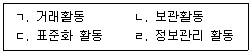
- ㄱ, ㄴ
- ㄱ, ㄹ
- ㄴ, ㄷ
- ㄴ, ㄹ
- ㄷ, ㄹ
(정답률: 40%)
3. 다음 설명에 해당하는 물류 영역은?
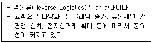
- 조달물류
- 생산물류
- 판매물류
- 폐기물류
- 반품물류
(정답률: 71%)
4. 물류환경의 변화와 발전에 관한 설명으로 옳지 않은 것은?
- 글로벌 물류시장을 선도하기 위한 국가적 차원의 종합물류기업 육성정책이 시행되고 있다.
- e-비즈니스 확산 등으로 Door-to-Door 일관배송, 당일배송 등의 서비스가 증가하고 있다.
- 유통가공 및 맞춤형 물류기능 확대 등 고부가가치 물류서비스가 발전하고 있다.
- 소비자 요구 충족을 위해서 수요예측 등 종합적 물류계획의 수립 및 관리가 중요해지고 있다.
- 기업의 핵심역량 강화를 위해서 물류기능을 직접 수행하는 화주기업이 증가하는 추세이다.
(정답률: 64%)
5. 스미키(E. W. Smykey)가 제시한 '물류관리 목적을 달성하기 위한 7R 원칙'에 해당하지 않는 것은?
- 적절한 상품(Right Commodity)
- 적절한 고객(Right Customer)
- 적절한 시기(Right Time)
- 적절한 장소(Right Place)
- 적절한 가격(Right Price)
(정답률: 68%)
6. 물류정책기본법의 물류산업 분류에서 화물의 하역과 포장, 가공, 조립, 상표부착, 프로그램 설치, 품질검사 등의 부가 서비스 사업에 해당하는 것은?
- 화물취급업
- 화물주선업
- 화물창고업
- 화물운송업
- 화물부대업
(정답률: 52%)
7. (주)한국물류의 배송부문 핵심성과지표(KPI)는 정시배송율이고, 배송완료 실적 중에서 지연이 발생하지 않은 비율로 측정한다. 배송자료가 아래와 같을 때 7월 17일의 정시배송율은?
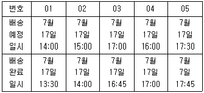
- 25 %
- 40 %
- 50 %
- 60 %
- 75 %
(정답률: 60%)
8. 고객서비스와 물류서비스에 관한 설명으로 옳지 않은 것은?
- 고객서비스의 목표는 고객만족을 통한 고객감동을 실현하는 것이다.
- 물류서비스의 목표는 서비스 향상과 물류비 절감을 통한 경영혁신이다.
- 경제적 관점에서의 최적 물류서비스 수준은 물류활동에 의한 이익을 최대화하는 것이다.
- 고객서비스 수준은 기업의 시장점유율과 수익성에 영향을 미친다.
- 일반적으로 고객서비스 수준이 높아지면 물류비가 절감되고 매출액은 증가한다.
(정답률: 64%)
9. 물류의 전략적 의사결정 활동으로 옳은 것은?
- 시설 입지계획
- 제품포장
- 재고통제
- 창고관리
- 주문품 발송
(정답률: 30%)
10. 물류전략 수립 시 고려사항으로 옳지 않은 것은?
- 물류 시스템의 설계 및 범위결정의 기준은 총비용 개념을 고려한다.
- 소비자 서비스는 모든 제품에 대해서 동일한 수준으로 제공되어야 한다.
- 물류활동의 중심은 운송, 보관, 하역, 포장 등이며, 비용과 서비스 면에서 상충 관계가 있다.
- 물류시스템에서 취급하는 제품이 다양할수록 재고는 증가하고 비용상승 요인이 될 수 있다.
- 도로, 철도, 항만, 공항 등 교통시설과의 접근성을 고려해야 한다.
(정답률: 30%)
11. 4자 물류(4PL: Fourth Party Logistics)의 특징으로 옳지 않은 것은?
- 합작투자 또는 장기간 제휴상태
- 기능별 서비스와 상하계약관계
- 공통의 목표설정 및 이익분배
- 공급사슬 상 전체의 관리와 운영
- 다양한 기업이 파트너로 참여하는 혼합조직 형태
(정답률: 55%)
12. 다음 설명에 해당하는 물류조직은?
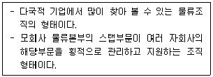
- 라인과 스탭형 물류조직
- 직능형 물류조직
- 사업부형 물류조직
- 기능특성형 물류조직
- 그리드형 물류조직
(정답률: 36%)
13. 6-시그마 물류혁신 프로젝트에서 다음 설명에 해당하는 추진 단계는?
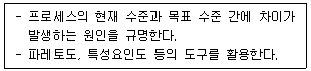
- 정의(Define)
- 측정(Measure)
- 분석(Analyze)
- 개선(Improve)
- 관리(Control)
(정답률: 50%)
14. 물류시스템이 수행하는 물류활동의 기본 기능에 관한 설명으로 옳지 않은 것은?
- 포장기능은 생산의 종착점이자 물류의 출발점으로써 표준화와 모듈화가 중요하다.
- 수송기능은 물류 거점과 소비 공간을 연결하는 소량 화물의 단거리 이동을 말한다.
- 보관기능은 재화를 생산하고 소비하는 시기와 수량의 차이를 조정하는 활동이다.
- 하역기능은 운송, 보관, 포장 활동 사이에 발생하는 물자의 취급과 관련된 보조활동이다.
- 정보관리기능은 물류계획 수립과 통제에 필요한 자료를 수집하고 물류관리에 활용하는 것이다.
(정답률: 52%)
15. 물류비의 분류체계에서 기능별 비목에 해당하지 않는 것은?
- 운송비
- 재료비
- 유통가공비
- 물류정보/관리비
- 보관 및 재고관리비
(정답률: 46%)
16. 물류 분야의 활동기준원가계산(ABC: Activity Based Costing)에 관한 설명으로 옳지 않은 것은?
- 재료비, 노무비 및 경비로 구분하여 계산한다.
- 업무를 활동단위로 세분하여 원가를 산출하는 방식이다.
- 활동별로 원가를 분석하므로 낭비요인이 있는 물류업무영역을 파악할 수 있다.
- 산정원가를 바탕으로 원가유발요인분석과 성과측정을 할 수 있다.
- 물류서비스별, 활동별, 고객별, 유통경로별, 프로세스별 수익성 분석이 가능하다.
(정답률: 36%)
17. 유통가공을 수행하는 A물류기업의 당기 고정비는 1억 원, 개당 판매 가격은 10만원, 변동비는 가격의 60 %이며 목표이익은 1억 원이다. 당기의 손익분기점 판매량( ㄱ )과 목표이익을 달성하기 위한 판매량( ㄴ )은 몇 개인가?
- ㄱ: 1,000개, ㄴ: 3,500개
- ㄱ: 1,500개, ㄴ: 4,000개
- ㄱ: 2,000개, ㄴ: 5,000개
- ㄱ: 2,500개, ㄴ: 5,000개
- ㄱ: 2,500개, ㄴ: 6,000개
(정답률: 4%)
18. 카플런(R. Kaplan)과 노턴(D. Norton)의 균형성과표(BSC: Balanced Score Card)는 전 조직원이 전략을 공유하고 전략방향에 따라 행동하도록 유도함으로써 회사의 가치창출을 보다 효과적이고 지속적으로 이루기 위한 성과측정 방법이다. BSC의 4가지 성과지표관리 관점에 해당하지 않는 것은?
- 고객관점(Customer Perspective)
- 재무적 관점(Financial Perspective)
- 전략적 관점(Strategic Perspective)
- 학습과 성장의 관점(Learning & Growth Perspective)
- 내부 경영프로세스 관점(Internal Business Process Perspective)
(정답률: 7%)
19. e-조달의 장점으로 옳지 않은 것은?
- 운영비용이 절감된다.
- 조달효율성이 개선된다.
- 조달가격이 절감된다.
- 문서처리 비용이 감소된다.
- 구매자와 판매자 간에 밀접한 관계가 구축된다.
(정답률: 57%)
20. 다음 설명에 해당하는 공급업체 선정 방법은?
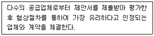
- 협의에 의한 방법
- 지명 경쟁에 의한 방법
- 제한 경쟁에 의한 방법
- 입찰에 의한 방법
- 수의계약에 의한 방법
(정답률: 7%)
21. 집중구매의 장점으로 옳지 않은 것은?
- 구입절차를 표준화하여 구매비용이 절감된다.
- 대량구매로 가격 및 거래조건이 유리하다.
- 공통자재의 표준화, 단순화가 가능하다.
- 긴급수요 발생 시 대응에 유리하다.
- 수입 등 복잡한 구매 형태에 유리하다.
(정답률: 38%)
22. 바코드와 비교한 RFID(Radio Frequency Identification)의 특징으로 옳지 않은 것은?
- 원거리 및 고속 이동시에도 인식이 가능하다.
- 반영구적인 사용이 가능하다.
- 국가별로 사용하는 주파수가 동일하다.
- 데이터의 신뢰도가 높다.
- 태그의 데이터 변경 및 추가가 가능하다.
(정답률: 47%)
23. 물류정보의 특징으로 옳지 않은 것은?
- 관리대상 정보의 종류가 많고, 내용이 다양하다.
- 성수기와 비수기의 정보량 차이가 크다.
- 정보의 발생원, 처리장소, 전달대상 등이 한 곳에 집중되어 있다.
- 상품과 정보의 흐름에 동시성이 요구된다.
- 구매, 생산, 영업활동과의 관련성이 크다.
(정답률: 57%)
24. 다음의 ( )에 들어갈 용어는?
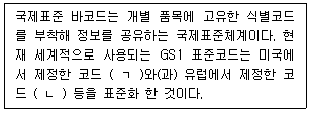
- ㄱ: UPC, ㄴ: EAN
- ㄱ: UPC, ㄴ: GTIN
- ㄱ: EAN, ㄴ: UPC
- ㄱ: EAN, ㄴ: GTIN
- ㄱ: GTIN, ㄴ: EAN
(정답률: 42%)
25. VAN(Value Added Network)에 관한 설명으로 옳은 것은?
- 한정된 지역의 분산된 장치들을 연결하여 정보를 공유하거나 교환하는 것이다.
- 컴퓨터 성능의 발달로 정보수집 능력이 우수한 대기업에 정보가 집중되므로 중소기업의 활용 가능성은 낮아지고 있다.
- 1990년대 미국의 AT&T가 전화회선을 임대하여 특정인에게 통신 서비스를 제공한 것이 효시이다.
- 부가가치를 부여한 음성 또는 데이터를 정보로 제공하는 광범위하고 복합적인 서비스의 집합이다.
- VAN 서비스는 컴퓨터 성능 향상으로 인해 이용이 감소되고 있다.
(정답률: 20%)
26. 물류정보시스템에 관한 설명으로 옳지 않은 것은?
- EDI(Electronic Data Interchange)는 표준화된 상거래 서식으로 작성된 기업 간 전자문서교환시스템이다.
- POS(Point of Sales)는 소비동향이 반영된 판매정보를 실시간으로 파악하여 판매, 재고, 고객관리의 효율성을 향상시킨다.
- 물류정보시스템의 목적은 물류비가 증가하더라도 고객서비스를 향상시키는 것이다.
- 물류정보의 시스템화는 상류정보의 시스템화가 선행되어야만 가능하며, 서로 밀접한 관계가 있다.
- 수주처리시스템은 최소의 주문입력(order entry) 비용을 목표로 고객서비스를 달성하는 것이 목적이다.
(정답률: 49%)
27. 공급사슬관리(SCM)에 관한 설명으로 옳지 않은 것은?
- 원자재를 조달해서 생산하여 고객에게 제품과 서비스를 제공하기 위한 프로세스 지향적이고 통합적인 접근 방법이다.
- ABM(Activity Based Management)을 근간으로 하여 각 공급사슬과 접점을 이루는 부문에서 계획을 수립하는 시스템이다.
- 가치사슬의 관점에서 원자재로부터 소비에 이르기까지의 구성원들을 하나의 집단으로 간주하여 물류와 정보 흐름의 체계적 관리를 추구한다.
- 전체 공급사슬을 관리하여 비용과 시간을 최소화하고 이익을 최대화하도록 지원하는 방법이다.
- 정보통신기술을 활용하여 공급자, 제조업자, 소매업자, 소비자와 관련된 상품, 정보, 자금흐름을 신속하고 효율적으로 관리하여 부가가치를 향상시키는 것이다.
(정답률: 42%)
28. 채찍효과(Bullwhip Effect)의 원인이 아닌 것은?
- 중복 또는 부정확한 수요예측
- 납품주기 단축과 납품횟수 증대
- 결품을 우려한 과다 주문
- 로트(lot)단위 또는 대단위 일괄(batch) 주문
- 가격변동에 의한 선행구입
(정답률: 24%)
29. 공급사슬 상에서 발생하는 경영환경변화에 관한 설명으로 옳지 않은 것은?
- 공급사슬 상에 위치한 조직 간의 상호 의존성이 증대되고 있다.
- 정보통신기술의 발전은 새로운 시장의 등장과 기업경영방식의 변화를 초래하고 있다.
- 기업 간의 경쟁 심화에 따라 비용절감과 납기개선의 중요성이 증대되고 있다.
- 물자의 이동이 주로 국내나 역내에서 이루어지고 있다.
- 고객의 다양한 니즈에 맞추기 위해 생산, 납품 등의 활동을 해야 할 필요성이 증대되고 있다.
(정답률: 52%)
30. 다음 설명에 해당하는 개념은?
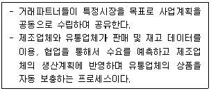
- Postponement
- Cross-Docking
- CPFR
- ECR
- CRP
(정답률: 7%)
31. T-11형 표준 파렛트를 사용하여 1단 적재 시, 적재효율이 가장 낮은 것은?
- 1,100 mm × 550 mm, 적재수 2
- 1,100 mm × 366 mm, 적재수 3
- 733 mm × 366 mm, 적재수 4
- 660 mm × 440 mm, 적재수 4
- 576 mm × 523 mm, 적재수 4
(정답률: 40%)
32. 물류표준화의 대상이 아닌 것은?
- 물류조직
- 수송
- 보관
- 포장
- 물류정보
(정답률: 33%)
33. 물류표준화 효과 중 자원 및 에너지의 절감 효과에 해당하는 것은?
- 물류기기와의 연계성 증대
- 재료의 경량화
- 작업성 향상
- 물류기기의 안전 사용
- 부품 공용화로 유지보수성 향상
(정답률: 20%)
34. 다음 ( )에 들어갈 수치는?
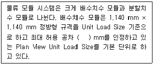
- - 30
- - 40
- - 50
- - 60
- - 70
(정답률: 20%)
35. 물류공동화에 관한 설명으로 옳지 않은 것은?
- 물류활동에 필요한 인프라를 복수의 파트너와 함께 연계하여 운영하는 것이다.
- 물류자원을 최대한 활용함으로써 물류비용 절감이 가능하다.
- 자사의 물류시스템과 타사의 물류시스템을 연계시켜 하나의 시스템으로 운영해야 하지만 회사 보안을 위해 시스템 개방은 포함하지 않는다.
- 물류환경의 문제점으로 대두되는 교통혼잡, 차량적재 효율저하, 공해문제 등의 해결책이 된다.
- 표준물류심벌 및 통일된 전표와 교환 가능한 파렛트의 사용 등이 전제되어야 가능하다.
(정답률: 44%)
36. 물류공동화 방안 중 하나인 공동 수ㆍ배송 시스템의 도입 필요성에 해당하는 사항을 모두 고른 것은?
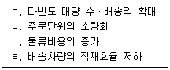
- ㄱ, ㄴ
- ㄷ, ㄹ
- ㄱ, ㄴ, ㄷ
- ㄴ, ㄷ, ㄹ
- ㄱ, ㄴ, ㄷ, ㄹ
(정답률: 16%)
37. 수ㆍ배송 공동화의 유형에 관한 설명으로 옳지 않은 것은?
- 배송공동형은 배송만 공동화하는 것을 의미하며, 화물거점시설까지의 공동화는 포함하지 않는다.
- 집배송공동형 중 특정화주공동형은 동일화주가 조합이나 연합회를 만들어 공동화하는 것이다.
- 집배송공동형 중 운송업자공동형은 다수의 운송업자들이 불특정 다수 화주들의 집배송을 공동화하는 것이다.
- 노선집화공동형은 노선업자가 화물들을 공동 집화하여 각지로 발송하는 것이다.
- 납품대행형은 화주가 납입선에 대행으로 납품하는 것이다.
(정답률: 7%)
38. 다음 설명에 해당하는 물류보안 제도는?
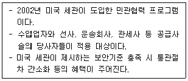
- C-TPAT(Customs-Trade Partnership Against Terrorism)
- ISO 28000(International Standard Organization 28000)
- ISPS code(International Ship and Port Facility Security code)
- CSI(Container Security Initiative)
- SPA(Safe Port Act)
(정답률: 7%)
39. 기후변화와 환경오염에 대응하는 녹색물류체계와 관련 있는 제도에 해당하지않는 것은?
- 저탄소녹색성장기본법
- 온실가스ㆍ에너지목표관리제
- 탄소배출권거래제도
- 생산자책임재활용제도
- 제조물책임법(PL)
(정답률: 35%)
40. 국가과학기술표준은 물류기술(EI10)을 8가지의 소분류로 나눈다. 다음 중 국가과학기술표준 소분류에 포함되지 않는 것은?
- EI1001 -물류운송기술
- EI1003 -하역기술
- EI1004 -물류정보화기술
- EI1007 -물류안전기술
- EI1099 -달리 분류되지 않는 물류기술
(정답률: 13%)
2과목: 화물수송론
41. 운송에 관한 설명으로 옳지 않은 것은?
- 경제적 운송을 위한 기본적인 원칙으로는 규모의 경제 원칙과 거리의 경제 원칙이 있다.
- 운송은 공간적 거리의 격차를 해소시켜주는 장소적 효용이 있다.
- 운송은 수송 중 물품을 일시적으로 보관하는 시간적 효용이 있다.
- 운송은 재화의 생산과 소비에 따른 파생적 수요이다.
- 운송의 3요소(Mode, Node, Link) 중 Mode는 각 운송점을 연결하여 운송되는 구간 또는 경로를 의미한다.
(정답률: 40%)
42. 화물자동차운송과 철도운송 조건이 다음과 같을 때 채트반공식을 이용한 자동차의 한계 경제효용거리(km)는?
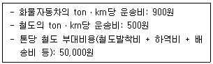
- 122
- 123
- 124
- 125
- 126
(정답률: 22%)
43. 철도화물의 운임체계에 관한 설명으로 옳지 않은 것은?
- 일반화물운임은 운송거리(km) × 운임단가(원/km) × 화물중량(톤)으로 산정한다.
- 사유화차로 운송되는 경우 할인운임을 적용한다.
- 컨테이너화물의 최저기본운임은 규격별 컨테이너의 100 km에 해당하는 운임으로 한다.
- 컨테이너화물의 운임은 컨테이너 규격별 운임단가(원/km) × 운송거리(km)로 산정한다.
- 공컨테이너의 운임은 규격별 영(적재)컨테이너 운임의 50 %를 적용하여 계산한다.
(정답률: 39%)
44. 컨테이너 운송에 일반적으로 이용되는 철도화차가 아닌 것은?
- Open top car
- Flat car
- Covered hopper car
- Container car
- Double stack car
(정답률: 37%)
45. 해상용 컨테이너 취급을 위한 장비가 아닌 것은?
- Gantry crane
- Transtainer
- Straddle carrier
- Reach stacker
- Dolly
(정답률: 7%)
46. 운송수단의 운영 효율화를 위한 원칙으로 옳은 것은?
- 소형차량을 이용하는 소형화 원칙
- 영차율 최소화 원칙
- 회전율 최소화 원칙
- 가동률 최대화 원칙
- 적재율 최소화 원칙
(정답률: 10%)
47. 최근 운송시장의 변화에 관한 내용으로 옳지 않은 것은?
- 운송화물의 소품종 대형화
- 환경규제의 강화
- 물류보안의 중요성 증대
- 정보시스템의 활용 증가
- 구매고객에 대한 서비스 수준의 향상
(정답률: 44%)
48. 다음에서 설명하고 있는 철도운송 서비스 형태는?
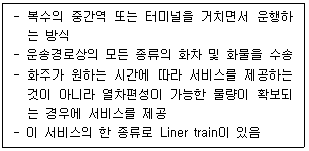
- Block train
- Shuttle train
- Single-Wagon train
- Y-Shuttle train
- U-train
(정답률: 4%)
49. 운임의 종류에 관한 내용으로 옳은 것은?
- 공적운임: 운송계약을 운송수단 단위 또는 일정한 용기단위로 했을 때 실제로 적재능력만큼 운송하지 않았더라도 부담해야 하는 미적재 운송량에 대한 운임
- 무차별운임: 일정 운송량, 운송거리의 하한선 이하로 운송될 경우 일괄 적용되는 운임
- 혼재운임: 단일화주의 화물을 운송수단의 적재능력만큼 적재 및 운송하고 적용하는 운임
- 전액운임: 운송거리에 비례하여 운임이 증가하는 형태의 운임
- 거리체감운임: 운송되는 화물의 가격에 따라 운임의 수준이 달라지는 형태의 운임
(정답률: 13%)
50. 항공화물의 탑재방식에 관한 설명으로 옳지 않은 것은?
- Bulk Loading은 좁은 화물실과 한정된 공간에 탑재할 때 효율을 높일 수 있는 방식이다.
- Pallet Loading은 지상 체류시간의 단축에 기여하는 탑재방식이다.
- Bulk Loading은 안정성과 하역작업의 기계화 측면에서 가장 효율적인 방식이다.
- Pallet Loading은 파렛트를 굴림대 위로 굴려 항공기 내의 정 위치에 고정시키는 방식이다.
- Container Loading은 화물실에 적합한 항공화물 전용 용기를 사용하여 탑재하는 방식이다.
(정답률: 36%)
51. 택배 표준약관(공정거래위원회 표준약관 제10026호)의 운송장에서 고객(송화인)이 사업자에게 교부해야하는 사항으로 옳은 것을 모두 고른 것은?
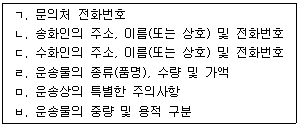
- ㄱ, ㄴ, ㄷ, ㅂ
- ㄱ, ㄷ, ㄹ, ㅁ
- ㄱ, ㄹ, ㅁ, ㅂ
- ㄴ, ㄷ, ㄹ, ㅁ
- ㄴ, ㄷ, ㅁ, ㅂ
(정답률: 37%)
52. 다음 수송표의 수송문제에서 북서코너법을 적용할 때, 총 운송비용과 공급지 2에서 수요지 2까지의 운송량은? (단, 공급지에서 수요지까지의 톤당 운송비는 각 칸의 우측 상단에 제시되어 있음)
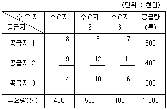
- 9,300,000원, 200톤
- 9,300,000원, 300톤
- 9,500,000원, 100톤
- 9,500,000원, 300톤
- 9,600,000원, 200톤
(정답률: 38%)
53. 택배 표준약관(공정거래위원회 표준약관 제10026호)에 따른 용어의 정의로 옳지 않은 것은?
- '운송장'이라 함은 사업자와 고객(송화인) 간의 택배계약의 성립과 내용을 증명하기 위하여 사업자의 청구에 의하여 고객(송화인)이 발행한 문서를 말한다.
- '인도'라 함은 사업자가 고객(송화인)에게 운송장에 기재된 운송물을 넘겨주는 것을 말한다.
- '수탁'이라 함은 사업자가 택배를 수행하기 위하여 고객(송화인)으로부터 운송물을 수령하는 것을 말한다.
- '택배사업자'라 함은 택배를 영업으로 하며, 상호가 운송장에 기재된 운송사업자를 말한다.
- '손해배상한도액'이라 함은 운송물의 멸실, 훼손 또는 연착 시에 사업자가 손해를 배상할 수 있는 최고 한도액을 말한다.
(정답률: 14%)
54. 화물자동차운송의 일반적인 특징으로 옳은 것은?
- 타 운송수단과 연동하지 않고는 일관된 서비스를 제공할 수 없다.
- 기동성과 신속한 전달로 문전운송(door-to-door)이 가능하여 운송을 완성시켜주는 역할을 한다.
- 철도운송에 비해 연료비 등 에너지 소비가 적어 에너지 효율성이 높다.
- 해상운송에 비해 화물의 중량이나 부피에 대한 제한이 적어 대량화물의 운송에 적합하다.
- 철도운송에 비해 정시성이 높다.
(정답률: 37%)
55. 다음은 A기업의 1년간 화물자동차 운행실적이다. 운행실적을 통해 얻을 수 있는 운영지표 값에 관한 내용으로 옳은 것은?
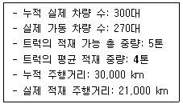
- 복화율은 90 %이다.
- 영차율은 90 %이다.
- 적재율은 90 %이다.
- 가동률은 90 %이다.
- 공차거리율은 90 %이다.
(정답률: 37%)
56. 운임에 영향을 주는 요인으로 옳은 것을 모두 고른 것은?
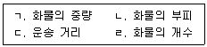
- ㄱ, ㄴ
- ㄷ, ㄹ
- ㄱ, ㄴ, ㄷ
- ㄴ, ㄷ, ㄹ
- ㄱ, ㄴ, ㄷ, ㄹ
(정답률: 40%)
57. 다음에서 설명하는 화물운송정보시스템은?
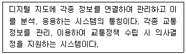
- Port-MIS(항만운영정보시스템)
- VMS(적재관리시스템)
- TRS(주파수공용통신)
- RFID(Radio Frequency Identification)
- GIS-T(교통지리정보시스템)
(정답률: 37%)
58. 택배 표준약관(공정거래위원회 표준약관 제10026호)에서 사업자가 운송물의 수탁을 거절할 수 있는 경우가 아닌 것은?
- 운송물의 인도예정일(시)에 따른 운송이 불가능한 경우
- 운송이 법령, 사회질서 기타 선량한 풍속에 반하는 경우
- 운송물 1포장의 가액이 100만원 이하인 경우
- 운송물이 살아 있는 동물, 동물사체 등인 경우
- 고객(송화인)이 운송장에 필요한 사항을 기재하지 아니한 경우
(정답률: 37%)
59. 화물자동차운송의 효율화 방안으로 옳지 않은 것은?
- 운송정보시스템의 구축
- 도로 및 기간시설의 확충
- 컨테이너 및 파렛트를 이용한 운송 확대
- 적재율 감소 및 차량의 배송 빈도 증가
- 공동배송체제 구축 및 확대
(정답률: 39%)
60. 적재중량 24톤 화물자동차가 다음과 같은 운송실적을 가질 때 연료소모량(L)은? (단, 영차(실차)운행 시에는 tonㆍkm당 연료소모기준을 적용함)
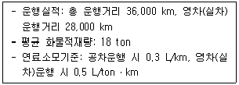
- 234,000
- 252,000
- 254,400
- 256,800
- 504,000
(정답률: 27%)
61. 철도운송에 관한 설명으로 옳지 않은 것은?
- 국내화물운송시장에서 철도운송은 도로운송에 비해 수송분담률이 낮다.
- 철도화물운송형태에는 화차취급운송, 컨테이너취급운송 등이 있다.
- 컨테이너의 철도운송은 크게 TOFC 방식과 COFC 방식이 있다.
- COFC 방식에는 피기백방식과 캥거루방식이 있다.
- 철도운송은 기후 상황에 크게 영향을 받지 않으며 계획적인 운송이 가능하다.
(정답률: 41%)
62. 다음에서 설명하고 있는 용선운송계약서의 조항은?
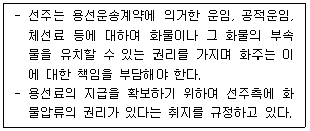
- Lien Clause
- Indemnity Clause
- Not before Clause
- Deviation Clause
- General Average Clause
(정답률: 4%)
63. 수ㆍ배송시스템의 설계에 관한 설명으로 옳지 않은 것은?
- 화물에 대한 리드타임(lead time)을 고려하여 설계한다.
- 화물차의 적재율을 높일 수 있도록 설계한다.
- 편도수송이나 중복수송을 피할 수 있도록 설계한다.
- 차량의 회전율을 높일 수 있도록 설계한다.
- 동일 지역에서의 집화와 배송은 별개로 이루어지도록 설계한다.
(정답률: 37%)
64. 해상운송에서 화주가 부담하는 할증운임(surcharge)에 관한 내용으로 옳지 않은 것은?
- Bunker Adjustment Factor는 선박의 주연료인 벙커유의 가격변동에 따른 손실을 보전하기 위한 할증료이다.
- Congestion Surcharge는 특정 항구의 하역능력 부족으로 인한 체선으로 장기간 정박을 요할 경우 해당 화물에 대한 할증료이다.
- Outport Surcharge는 운송 도중에 당초 지정된 양륙항을 변경하는 화물에 대한 할증료이다.
- Currency Adjustment Factor는 급격한 환율변동으로 선사가 입을 수 있는 환차손에 대한 할증료이다.
- Transshipment Surcharge는 화물이 운송 도중 환적될 때 발생하는 추가비용을 보전하기 위한 할증료이다.
(정답률: 4%)
65. 수입지에서 원본 선하증권의 제시 없이 선사로부터 화물을 찾는데 사용되는 것으로 옳은 것을 모두 고른 것은?
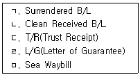
- ㄱ, ㄴ
- ㄱ, ㄷ, ㅁ
- ㄱ, ㄹ, ㅁ
- ㄴ, ㄷ, ㄹ
- ㄴ, ㄷ, ㄹ, ㅁ
(정답률: 10%)
66. 다음에서 설명하고 있는 국제물류주선업자의 서비스 종류는?
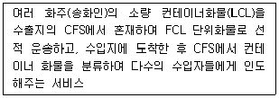
- Buyerʼs Consolidation
- Forwarderʼs Consolidation
- Masterʼs Consolidation
- Shipperʼs Consolidation
- Sellerʼs Consolidation
(정답률: 30%)
67. ( )에 들어갈 내용으로 바르게 나열한 것은?
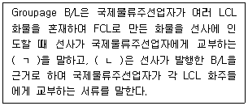
- ㄱ: Through B/L, ㄴ: House B/L
- ㄱ: Master B/L, ㄴ: Red B/L
- ㄱ: Straight B/L, ㄴ: Baby B/L
- ㄱ: Master B/L, ㄴ: House B/L
- ㄱ: Foul B/L, ㄴ: Consolidated B/L
(정답률: 37%)
68. 항공기에 관한 설명으로 옳지 않은 것은?
- High Capacity Aircraft는 소형기종의 항공기로서 데크(deck)에 의해 상부실 및 하부실로 구분되며 하부실은 구조상 ULD의 탑재가 불가능하다.
- 항공기는 국제민간항공조약에 의해 등록이 이루어진 국가의 국적을 보유하도록 되어 있다.
- 여객기는 항공기의 상부 공간은 객실로 이용하고 하부 공간은 화물실로 이용한다.
- Convertible Aircraft는 화물실과 여객실을 상호 전용할 수 있도록 제작된 항공기이다.
- 항공기 블랙박스는 비행정보 기록장치와 음성 기록장치를 통칭하는 이름이다.
(정답률: 10%)
69. 다음에서 설명하고 있는 항공화물 운임 요율의 종류는?
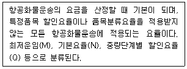
- GCR(General Cargo Rate)
- SCR(Specific Commodity Rate)
- CCR(Commodity Classification Rate)
- BUC(Bulk Unitization Charge)
- CCF(Charge Collect Fee)
(정답률: 13%)
70. 다음 수송표에서 최소비용법과 보겔추정법을 적용하여 총 운송비용을 구할 때 각각의 방식에 따라 산출된 총 운송비용의 차이는? (단, 공급지에서 수요지까지의 톤당 운송비는 각 칸의 우측 상단에 제시되어 있음)
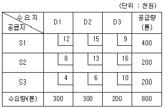
- 300,000원
- 400,000원
- 500,000원
- 600,000원
- 700,000원
(정답률: 4%)
71. 천장이 개구된 형태이며 주로 석탄 및 철광석 등과 같은 화물에 포장을 덮어 운송하는 트레일러는?
- 스케레탈 트레일러
- 오픈탑 트레일러
- 중저상식 트레일러
- 저상식 트레일러
- 평상식 트레일러
(정답률: 37%)
72. 택배운송장의 역할에 관한 설명으로 옳지 않은 것은?
- 송화인과 택배회사 간의 계약서 역할
- 택배요금에 대한 영수증 역할
- 송화인과 택배회사 간의 화물인수증 역할
- 물류활동에 대한 화물취급지시서 역할
- 택배회사의 사업자등록증 역할
(정답률: 13%)
73. 다음과 같은 파이프라인 네트워크에서 X지점에서 Y지점까지 유류를 보낼 때 최대유량(톤)은? (단, 링크의 화살표 방향으로만 송유가 가능하며 링크의 숫자는 용량을 나타냄)
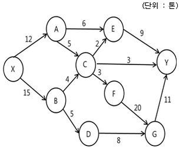
- 18
- 19
- 20
- 21
- 22
(정답률: 0%)
74. 선박이 접안하는 부두 안벽에 접한 야드의 일부분으로 바다와 가장 가까이 접해 있으며 갠트리 크레인(Gantry Crane)이 설치되어 컨테이너의 적재와 양륙작업이 이루어지는 장소는?
- Berth
- Marshalling Yard
- Apron
- CY(Container Yard)
- CFS(Container Freight Station)
(정답률: 17%)
75. 택배운송에 관한 내용으로 옳지 않은 것은?
- 사업허가를 득한 운송업자의 책임 하에 이루어지는 일관책임체계를 갖는다.
- 물류거점, 물류정보시스템, 운송네트워크 등이 요구되는 산업이다.
- 소화물을 송화인의 문전에서 수화인의 문전까지 배송하는 door-to-door 서비스를 의미한다.
- 전자상거래의 확산에 따른 다빈도 배송 수요의 영향으로 택배 관련 산업이 성장추세에 있다.
- 택배 서비스 제공업체, 수화인의 지역, 화물의 규격과 중량 등에 상관없이 국가에서 정한 동일한 요금이 적용된다.
(정답률: 42%)
76. 다음의 도로망을 이용하여 공장에서 물류센터까지 상품을 운송할 때 최단경로 산출거리(km)는? (단, 링크의 숫자는 거리이며 단위는 km임)
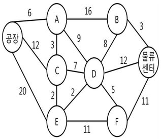
- 23
- 24
- 25
- 26
- 27
(정답률: 10%)
77. 수송수요모형에 관한 내용으로 옳은 것은?
- 중력모형: 지역 간의 운송량은 경제규모에 비례하고 거리에 반비례한다는 가정에 의한 분석모형
- 통행교차모형: 화물 발생량 및 도착량에 영향을 주는 다양한 변수 간의 상관관계에 대한 복수의 식을 도출하여, 교차하는 화물량을 예측하는 모형
- 선형로짓모형: 범주화한 운송수단을 대상으로 운송구간의 운송비용을 이용하여 구간별 통행량을 산출하는 모형
- 회귀모형: 일정구역에서 화물의 분산정도가 극대화한다는 가정을 바탕으로 분석한 모형
- 성장인자모형: 화물의 이동형태 변화를 기반으로 인구에 따른 화물 발생단위를 산출하고, 이를 통하여 장래의 수송수요를 예측하는 모형
(정답률: 4%)
78. 해상운송에서 부정기선 운임이 아닌 것은?
- 장기계약운임
- 현물운임
- 특별운임
- 공적운임
- 연속항해운임
(정답률: 7%)
79. 배송방법에 관한 설명으로 옳은 것을 모두 고른 것은?
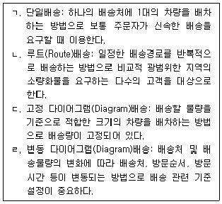
- ㄱ, ㄷ
- ㄴ, ㄷ
- ㄴ, ㄹ
- ㄱ, ㄴ, ㄹ
- ㄱ, ㄷ, ㄹ
(정답률: 36%)
80. 수ㆍ배송 계획을 위한 물동량 할당 또는 배송경로 해법에 관한 내용으로 옳지 않은 것은?
- 북서코너법(North-West Corner Method): 수송계획표의 왼쪽상단인 북서쪽부터 물동량을 할당하며 시간, 거리, 위치를 모두 고려하는 방법
- 최소비용법(Least-Cost Method): 수송계획표에서 단위당 수송비용이 가장 낮은 칸에 우선적으로 할당하는 방법
- 보겔추정법(Vogel's Approximation Method): 수송계획표에서 최적의 수송경로를 선택하지 못했을 때 발생하는 기회비용을 고려하여 물동량을 할당하는 방법
- TSP(Travelling Salesman Problem): 차량이 지역 배송을 위해 배송센터를 출발하여 되돌아오기까지 소요되는 시간 또는 거리를 최소화하기 위한 방법
- 스위핑법(Sweeping Method): 차고지에서 복수의 배송처에 선을 연결한 후 시계 방향 또는 반시계방향으로 돌려가며 순차적으로 배송하는 방법
(정답률: 4%)
3과목: 국제물류론
81. 국제물류의 특징으로 옳지 않은 것은?
- 국제물동량은 지속적으로 증가하고 있다.
- 국제물류는 해외고객에 대한 서비스향상에 기여한다.
- 국제물류는 국가 경제발전과 물가안정에 기여한다.
- 국제물류는 국내물류에 비해 짧은 리드타임을 가지고 있다.
- 국제물류는 제품 및 기업의 국제경쟁력에 기여한다.
(정답률: 37%)
82. 국제물류의 동향으로 옳지 않은 것은?
- 선박대형화에 따른 항만효율화를 위해 Post Panamax Crane이 도입되었다.
- 선박대형화에 따라 항만의 수심이 깊어지고 있다.
- 국제특송업체들은 항공화물운송 효율화를 위해 항공기 소형화를 추진하고 있다.
- 글로벌 공급사슬 관점에서의 국제물류관리가 중요해지고 있다.
- 정보통신기술의 발전으로 국제물류체계가 플랫폼화 및 고도화되고 있다.
(정답률: 17%)
83. 다음 설명에 해당하는 국제물류시스템의 내용으로 옳지 않은 것은?
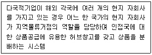
- 허브창고에서 수송거리가 먼 자회사가 존재하는 경우 수송비용증가 및 서비스수준 하락을 가져올 수 있다.
- 고전적 시스템보다 재고량이 감축되어 보관비가 절감된다.
- 국내 생산공장에서 허브창고까지의 상품수송은 대량수송과 저빈도 수송형태이다.
- 해당 물류시스템은 창고형뿐만 아니라 통과형으로도 사용가능하다.
- 허브창고의 입지는 수송의 편리성이 아닌 지리적 서비스 범위로만 결정한다.
(정답률: 30%)
84. 최근 국제물류 환경 변화로 옳지 않은 것은?
- 최적화를 위한 물류기능의 개별적 수행 추세
- 국제 물동량의 지속적인 증가 추세
- 초대형 컨테이너 선박 증가에 따른 허브항만 경쟁심화 추세
- 제3자 물류업체들의 국제물류시장 진입 활성화 추세
- 생산시설의 글로벌화에 따른 글로벌 물류네트워크 구축 추세
(정답률: 39%)
85. 글로벌 소싱의 이유에 해당하지 않는 것은?
- 비용절감
- 상품개발과 생산기간 단축
- 핵심역량에 집중
- 조직효율성 개선
- 인력증대
(정답률: 36%)
86. 해상운송과 관련된 국제기구에 관한 설명으로 옳지 않은 것은?
- IMO는 정부간 해사기술의 상호협력, 해사안전 및 해양오염방지대책, 국제간 법률문제 해결 등을 목적으로 설립되었다.
- FIATA는 국제운송인을 대표하는 비정부기구로 전 세계 운송주선인의 통합, 운송 주선인의 권익보호, 운송주선인의 서류통일과 표준거래조건의 개발 등을 목적으로 한다.
- ICS는 선주의 이익증진을 목적으로 설립된 민간 기구이며, 국제해운의 기술 및 법적 분야에 대해 제기된 문제에 대해 선주들의 의견교환, 정책입안 등을 다룬다.
- BIMCO는 회원사에 대한 정보제공 및 자료발간, 선주의 단합 및 용선제도 개선, 해운업계의 친목 및 이익 도모를 목적으로 설립되었다.
- CMI는 선박의 항로, 항만시설 등을 통일하기 위해 설치된 UN전문기구이다.
(정답률: 26%)
87. UCP 600에서 다음과 같이 환적을 정의하고 있는 운송서류와 관련이 있는 것을 모두 고른 것은?
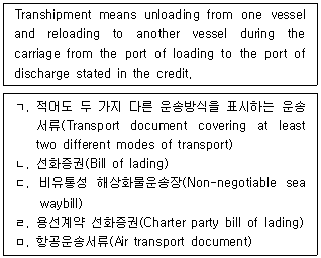
- ㄱ, ㄴ
- ㄴ, ㄷ
- ㄷ, ㄹ
- ㄷ, ㅁ
- ㄹ, ㅁ
(정답률: 7%)
88. 선박의 톤수에 관한 설명으로 옳지 않은 것은?
- 총톤수(Gross Tonnage)는 선박이 직접 상행위에 사용되는 총 용적으로 주로 톤세, 항세, 운하통과료, 항만시설 사용료 등을 부과하는 기준이 되고 있다.
- 순톤수(Net Tonnage)는 선박의 총톤수에서 기관실, 선원실 및 해도실 등의 선박운항과 관련된 장소의 용적을 제외한 것으로 여객이나 화물의 수송에 직접 사용되는 용적을 표시하는 톤수이다.
- 배수톤수(Displacement Tonnage)는 선체의 수면아래 부분의 배수용적에 상당하는 물의 중량을 말한다.
- 재화용적톤수(Measurement Tonnage)는 화물선창내의 화물을 적재할 수 있는 총 용적으로 선박의 화물적재능력을 용적으로 표시하는 톤수이다.
- 재화중량톤수(Dead Weight Tonnage)는 선박의 만재흘수선에 상당하는 배수량과 경하배수량의 차이이며, 선박의 최대적재능력을 나타낸다.
(정답률: 13%)
89. 해상운임에 관한 설명으로 옳지 않은 것은?
- Lumpsum freight: 화물의 개수, 중량, 용적 기준과 관계없이 용선계약의 항해단위 또는 선복의 양을 단위로 계산한 운임
- Forward rate: 용선계약 체결 시 화물을 장기간이 지난 후 적재하기로 하는 경우에 미리 합의하는 운임
- Back freight: 화물이 목적항에 도착하였으나 수화인이 화물의 인수를 거절하거나 목적항의 사정으로 양륙할 수 없어서 화물을 다른 곳으로 운송하거나 반송할 때 적용되는 운임
- Pro rate freight: 선박이 운송도중 불가항력 또는 기타 원인에 의해 목적항을 변경할 경우에 부과되는 운임
- Optional charge: 선적시에 화물의 양륙항이 확정되지 않고 화주가 여러 항구 중에서 양륙항을 선택할 권리가 있는 화물에 대해서 부과되는 할증요금
(정답률: 7%)
90. 부정기선 운송에 관한 설명으로 옳지 않은 것은?
- 화주는 용선계약에 따라 항로와 운항일정의 자유로운 선택이 가능하다.
- 선박회사 간의 과다한 운임경쟁을 막기 위해 공표된 운임을 적용하는 것이 일반적이다.
- 용선계약에 의해서 운송계약이 성립되고, 용선계약서를 작성하게 된다.
- 운임부담능력이 적거나 부가가치가 낮은 화물을 대량으로 운송할 수 있다.
- 주요 대상화물은 곡물, 광석, 유류 등과 같은 산화물(Bulk cargo)이다.
(정답률: 39%)
91. 다음에 해당하는 선화증권(Bill of Lading)을 순서대로 나열한 것은?
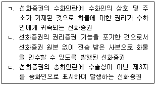
- ㄱ: Straight B/L, ㄴ: Surrendered B/L, ㄷ: Third Party B/L
- ㄱ: Straight B/L, ㄴ: Short form B/L, ㄷ: Negotiable B/L
- ㄱ: Order B/L, ㄴ: Groupage B/L, ㄷ: Third Party B/L
- ㄱ: Order B/L, ㄴ: House B/L, ㄷ: Switch B/L
- ㄱ: Charter Party B/L, ㄴ: Surrendered B/L, ㄷ: Switch B/L
(정답률: 10%)
92. 운송관련 서류 중 선적지에서 발행하는 서류가 아닌 것은?
- 수입화물선취보증장(Letter of Guarantee)
- 파손화물보상장(Letter of Indemnity)
- 선화증권(Bill of Lading)
- 선적예약확인서(Booking Note)
- 적화목록(Manifest)
(정답률: 4%)
93. 다음 설명에 해당하는 복합운송 경로는?
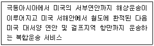
- America Land Bridge
- Reverse Interior Point Intermodal
- Overland Common Point
- Mini Land Bridge
- Micro Land Bridge
(정답률: 4%)
94. 용선계약에 관한 설명으로 옳지 않은 것은?
- Voyage Charter는 특정 항구에서 다른 항구까지 화물운송을 의뢰하고자 하는 용선자와 선주 간에 체결되는 계약이다.
- CQD는 해당 항구의 관습적 하역 방법 및 하역 능력에 따라 가능한 빨리 하역하는 정박기간 조건이다.
- Running Laydays는 하역개시일부터 종료일까지 모든 일수를 정박기간에 산입하지만 우천시, 동맹파업 및 기타 불가항력 등으로 하역을 하지 못한 경우 정박기간에서 제외하는 조건이다.
- Demurrage는 초과정박일수에 대해 용선자가 선주에게 지급하기로 한 일종의 벌과금이다.
- Dispatch Money는 용선계약상 정해진 정박기간보다 더 빨리 하역이 완료되었을 경우에 절약된 기간에 대해 선주가 용선자에게 지급하기로 약정한 보수이다.
(정답률: 7%)
95. 다음 내용에 해당하는 선박은?
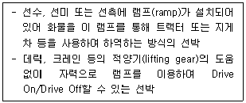
- LO-LO(Lift On/Lift Off) Ship
- RO-RO(Roll On/Roll Off) Ship
- FO-FO(Float On/Float Off) Ship
- Geared Container Ship
- Gearless Container Ship
(정답률: 4%)
96. 컨테이너운송에 관한 설명으로 옳은 것은?
- 컨테이너운송은 1920년대 미국에서 해상화물운송용으로 처음 등장하여 군수물자의 운송에 사용된 것이 시초이다.
- 컨테이너의 성격과 구조에 관하여는 일반적으로 함부르크 규칙(1978)에서 규정하고 있다.
- 특수컨테이너의 지속적인 개발로 컨테이너화물의 운송비중은 현재 전 세계 물동량의 약 70 %에 달하고 있다.
- 탱크(Tank) 컨테이너는 유류, 술, 화학약품, 고압가스 등의 액체화물을 운송하기 위해 설계된 컨테이너를 말한다.
- 컨테이너화물의 하역에는 LO-LO(Lift On/Lift Off) 방식만 적용 가능하다.
(정답률: 7%)
97. 복합운송주선인(Forwarder)에 관한 설명으로 옳지 않은 것은?
- 송화인으로부터 화물을 인수하여 수화인에게 인도할 때까지 화물의 적재, 운송, 보관 등의 업무를 주선한다.
- 우리나라에서 복합운송주선인은 해상화물은 물론 항공화물도 주선할 수 있다.
- 복합운송주선인 스스로는 운송계약의 주체가 될 수 없으며, 송화인의 주선인으로서 활동한다.
- 복합운송주선인의 주요 업무는 화물의 집화, 분류, 수배송 및 혼재작업 등이다.
- 복합운송주선인은 화주를 대신하여 보험계약을 체결하기도 한다.
(정답률: 36%)
98. 항공화물운송의 특성에 관한 설명으로 옳은 것은?
- 국내항공화물운송과 달리 국제항공화물운송은 대부분 왕복운송형태를 보이고 있다.
- 국제항공화물운송은 송화인이 의뢰한 화물을 그대로 벌크형태로 탑재하기 때문에 지상조업이 거의 필요하지 않다.
- 항공화물운송은 주간운송에 집중되는 경향이 있다.
- 신문, 잡지, 정기간행물 등과 같이 판매시기가 한정된 품목도 항공화물운송의 주요 대상이다.
- 해상화물운송과 달리 항공화물운송은 운송 중 매각을 위해 유통성 권리증권인 항공화물운송장(Air Waybill)이 널리 활용되고 있다.
(정답률: 33%)
99. 항공화물운송의 탑재방식에 관한 설명으로 옳지 않은 것은?
- 컨테이너와 파렛트는 항공화물의 단위탑재에 사용된다.
- 항공화물의 단위탑재 시 고급의류는 컨테이너에 적재하는 것이 적합하다.
- 여객기에 탑재하는 벨리카고(Belly Cargo)는 파렛트를 활용한 단위탑재만 가능하다.
- 항공화물의 단위탑재 시 기계부품은 파렛트에 적재하는 것이 적합하다.
- 이글루(Igloo)도 항공화물의 단위탑재 용기이다.
(정답률: 29%)
100. 최근 국제항공화물운송의 환경 변화에 관한 설명으로 옳지 않은 것은?
- 송화인의 항공화물운송 의뢰는 대부분 항공화물운송주선인(Air Freight Forwarder)에 의해 이루어지고 있다.
- 코로나19 등으로 인해 항공화물운송료가 급등하고 있어 전체 물동량은 줄어들고 있다.
- 아마존과 같은 국제전자상거래업체의 성장으로 GDC(Global Distribution Center) 관련 항공화물이 증가하고 있다.
- 국제항공화물운송에서 신선화물이 증가하고 있다.
- 우리나라 인천국제공항의 국제항공 환적화물 비중이 크게 증가하고 있다.
(정답률: 37%)
101. 국제해상 컨테이너화물의 운송형태에 관한 설명으로 옳지 않은 것은?
- 컨테이너화물은 컨테이너 1개의 만재 여부에 따라 FCL(Full Container Load)과 LCL(Less than Container Load)화물로 대별할 수 있다.
- CY→CY (FCL→FCL)운송: 수출지 CY에서 수입지 CY까지 FCL형태로 운송되며, 컨테이너운송의 장점을 최대한 살릴 수 있는 방식이다.
- CFS→CFS (LCL→LCL)운송: 수출지 CFS에서 수입지 CFS까지 운송되며, 운송인이 다수의 송화인으로부터 LCL화물을 모아 혼재하여 운송하는 방식이다.
- CFS→CY (LCL→ FCL)운송: 운송인이 다수의 송화인으로부터 화물을 모아 수출지 CFS에서 혼재하여 FCL로 만들고, 수입지 CY에서 분류하지 않고 그대로 수화인에게 인도하는 형태이다.
- CY →CFS (FCL → LCL)운송: 수출지 CY로부터 수입지 CFS까지 운송하는 방식으로, 다수의 송화인과 다수의 수화인 구조를 갖고 있다.
(정답률: 13%)
102. 국제항공기구와 조약에 관한 설명으로 옳은 것은?
- 국제항공운송에 관한 대표적인 조약으로는 Hague규칙(1924), Montreal조약(1999) 등이 있다.
- 국제항공기구로는 대표적으로 FAI(19⑤), IATA(1945), ICAO(1947) 등이 있다.
- ICAO(1947)는 국제정기항공사가 중심이 된 민간단체이지만, IATA(1945)는 정부간 국제협력기구이다.
- Warsaw조약(1929)은 항공기에 의해 유무상으로 행하는 수화물 또는 화물의 모든 국내외운송에 적용된다.
- ICAO(1947)의 설립목적은 전 세계의 국내외 민간 및 군용항공기의 안전과 발전을 도모하는데 있다.
(정답률: 4%)
103. 다음은 FCL 컨테이너화물의 선적절차이다. 순서대로 올바르게 나열한 것은?
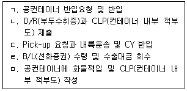
- ㄱ → ㄴ → ㄷ → ㅁ → ㄹ
- ㄱ → ㅁ → ㄴ → ㄷ → ㄹ
- ㄱ → ㅁ → ㄷ → ㄴ → ㄹ
- ㅁ → ㄱ → ㄷ → ㄴ → ㄹ
- ㅁ → ㄷ → ㄱ → ㄴ → ㄹ
(정답률: 7%)
104. 국제복합운송에 관한 설명으로 옳은 것은?
- 국제복합운송이라는 용어는 대표적인 국제복합운송 관련 조약인 바르샤바조약(1929)에서 처음 사용되었다.
- 국제복합운송의 요건으로 하나의 운송계약, 하나의 책임주체, 단일의 운임, 단일의 운송수단 등을 들 수 있다.
- 국제복합운송이란 국가 간 두 가지 이상의 동일한 운송수단을 이용하여 운송하는 것이다.
- 컨테이너운송의 발달은 국제복합운송 발달의 계기가 되었다.
- 복합운송 시에는 운송 중 물품 매각이 불필요하기 때문에 복합운송증권은 비유통성 기명식으로 발행되는 것이 일반적이다.
(정답률: 37%)
1⑤. 다음 중 헤이그규칙상의 선화증권 법정기재사항으로 옳은 것을 모두 고른 것은?
- ㄱ, ㄴ, ㄷ
- ㄱ, ㄷ, ㄹ
- ㄱ, ㅁ, ㅂ
- ㄴ, ㄹ, ㅂ
- ㄴ, ㅁ, ㅂ
(정답률: 7%)
106. 항공화물운송장의 설명으로 옳지 않은 것은?
- 항공화물운송장의 원본은 적색, 청색, 녹색 3통이 발행된다.
- 항공화물운송장 원본 2는 적색으로 발행되며, 송화인용이다.
- 항공화물운송장은 수출입신고 및 통관자료로 사용될 수 있다.
- 항공화물운송장 원본 3은 화물수취증의 기능을 가진다.
- 항공화물운송장 사본 4는 수화인의 화물수령 증거가 된다.
(정답률: 7%)
107. 다음에서 설명하는 물류보안 제도는?
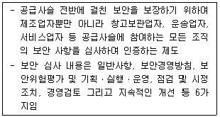
- CSI
- C-TPAT
- ISPS CODE
- ISO 28000
- AEO
(정답률: 0%)
108. 복합운송증권의 특징으로 옳은 것은?
- 복합운송증권은 운송인이 송화인으로부터 화물을 인수한 시점에 발행된다.
- 복합운송증권은 운송주선인이 발행할 수 없다.
- 복합운송증권상의 복합운송인의 책임구간은 화물 선적부터 최종 목적지에서 양륙할 때까지이다.
- 복합운송증권상의 복합운송인은 화주에 대해서 구간별 분할책임을 진다.
- 복합운송증권은 양도가능 형식으로만 발행된다.
(정답률: 4%)
109. 해상화물운송장에 관한 설명으로 옳지 않은 것은?
- 해상화물운송장에는 그 운송장과 상환으로 물품을 인도한다는 취지의 문언이 없다.
- 해상화물운송장은 운송 중에 양도를 통해 화물의 전매가 가능하다.
- 송화인은 수화인이 인도를 청구할 때까지 수화인을 자유롭게 변경할 수 있다.
- 해상화물운송장은 운송계약의 추정적 증거서류이다.
- 해상화물운송장을 사용하는 경우 그 운송장의 제출 없이도 운송인은 수화인에게 화물 인도가 가능하다.
(정답률: 0%)
110. 항만과 공항에 관한 설명으로 옳은 것을 모두 고른 것은?
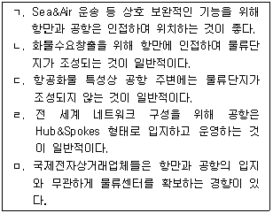
- ㄱ, ㄴ, ㄹ
- ㄱ, ㄷ, ㄹ
- ㄴ, ㄷ, ㅁ
- ㄴ, ㄹ, ㅁ
- ㄷ, ㄹ, ㅁ
(정답률: 17%)
111. ICD에 관한 설명으로 옳지 않은 것은?
- 내륙의 공항 내에 설치되어 있는 시설로서 운송기지 또는 운송거점으로서의 역할이 강조되고 있다.
- 컨테이너화물의 통관, 배송, 보관, 집화 등을 수행한다.
- 철도와 도로가 연결되는 복합운송거점으로서 대량운송을 통한 운송비를 절감할 수 있다.
- 본래는 내륙통관기지(Inland Clearance Depot)를 의미하였으나 컨테이너화의 확산으로 내륙컨테이너기지로 성장하였다.
- ICD의 이점은 운송면에서 화물의 대단위에 의한 운송효율의 향상과 항만지역의 교통 혼잡을 줄일 수 있다는 것이다.
(정답률: 33%)
112. Incoterms 2020에 관한 설명으로 옳지 않은 것은?
- FCA규칙에서는 매수인이 자신의 운송수단으로 물품을 운송할 수 있고, DAP규칙, DPU규칙 및 DDP규칙에서는 매도인이 자신의 운송수단으로 물품을 운송할 수 있다.
- "터미널"뿐만 아니라 어떤 장소든 목적지가 될 수 있는 현실을 강조하여 기존의 DAT규칙이 DPU규칙으로 변경되었다.
- CFR규칙에서는 인도장소에 대한 합의가 없는 경우, 인천에서 부산까지는 피더선으로, 부산에서 롱비치까지는 항양선박(Ocean Vessel)으로 운송한다면 위험은 인천항의 선박적재 시에 이전한다.
- 선적전 검사비용은 EXW규칙의 경우 매수인이 부담하고, DDP규칙의 경우 매도인이 부담한다.
- FOB규칙에서 매수인에 의해 지정된 선박이 물품을 수령하지 않은 경우 물품이 계약물품으로서 특정되어 있지 않더라도 합의된 인도기일부터 매수인은 위험을 부담한다.
(정답률: 27%)
113. 관세법상 보세운송에 관한 설명으로 옳지 않은 것은?
- 보세운송을 하려는 자는 물품의 감시 등을 위하여 필요하다고 인정하여 대통령령으로 정하는 경우 세관장에게 보세운송신고를 하여야 한다.
- 보세운송의 신고는 화주의 명의로 할 수 있다.
- 세관장은 보세운송물품의 감시ㆍ단속을 위하여 필요하다고 인정될 때에는 관세청장이 정하는 바에 따라 운송통로를 제한할 수 있다.
- 보세운송 신고를 한 자는 해당 물품이 운송목적지에 도착하였을 때 도착지의 세관장에게 보고하여야 한다.
- 수출신고가 수리된 물품은 관세청장이 따로 정하는 것을 제외하고는 보세운송절차를 생략한다.
(정답률: 4%)
114. 관세법상 수출입신고를 생략하게 하거나 관세청장이 정하는 간소한 방법으로 신고하게 할 수 있는 물품에 해당되지 않는 것은?
- 휴대품
- 탁송품
- 우편물
- 별송품
- 해외로 수출하는 운송수단
(정답률: 27%)
115. Incoterms 2020의 CIP와 CIF규칙에서 당사자 간에 합의가 없는 경우 매도인이 매수인을 위하여 부보하여야 하는 보험조건에 대하여 올바르게 연결된 것은?
- CIP의 경우 ICC (A) - CIF의 경우 ICC (B)
- CIP의 경우 ICC (A) - CIF의 경우 ICC (C)
- CIP의 경우 ICC (B) - CIF의 경우 ICC (A)
- CIP의 경우 ICC (B) - CIF의 경우 ICC (B)
- CIP의 경우 ICC (C) - CIF의 경우 ICC (A)
(정답률: 20%)
116. Incoterms 2020에서 물품의 양륙에 관한 설명으로 옳지 않은 것은?
- FCA규칙에서 매도인의 구내가 아닌 그 밖의 장소에서 물품의 인도가 이루어지는 경우 매도인은 도착하는 운송수단으로부터 물품을 양륙할 의무가 없다.
- FOB규칙에서 목적항에서 물품의 양륙비용은 매수인이 지급한다.
- CPT규칙에서 목적지에서 물품의 양륙비용을 운송계약에서 매도인이 부담하기로 한 경우에는 매도인이 이를 부담하여야 한다.
- DAP규칙에서 매도인이 운송계약에 따라 목적지에서 물품의 양륙비용을 부담한 경우 별도의 합의가 없다면 매수인으로부터 그 양륙비용을 회수할 수 있다.
- DPU규칙에서 목적지에서 물품의 양륙비용은 매도인이 부담하여야 한다.
(정답률: 30%)
117. 위부(Abandonment)에 관한 설명으로 옳지 않은 것은?
- 위부의 통지는 피보험자가 손해를 추정전손으로 처리하겠다는 의사표시이다.
- 위부는 피보험자가 잔존물에 대한 모든 권리를 보험자에게 이전하고 전손보험금을 청구하는 행위이다.
- 피보험자의 위부통지를 보험자가 수락하게 되면 잔존물에 대한 일체의 권리는 보험자에게 이전된다.
- 피보험자가 위부통지를 하지 않으면 손해는 분손으로 처리된다.
- 보험목적물이 전멸하여 보험자가 회수할 잔존물이 없더라도 위부를 통지하여야 한다.
(정답률: 25%)
118. 공동해손(General Average)이 발생한 경우 이를 정산하기 위하여 사용되는 국제규칙은?
- Uniform Rules for Collection
- York-Antwerp Rules
- International Standby Practices
- Rotterdam Rules
- Uniform Rules for Demand Guarantees
(정답률: 24%)
119. 무역계약조건 중 선적조건에 관한 설명으로 옳은 것은?
- 계약에서 선적횟수와 선적수량을 구체적으로 나누어 약정한 경우를 분할선적이라고 한다.
- UCP 600에서는 신용장이 분할선적을 금지하고 있더라도 분할선적은 허용된다.
- UCP 600에서는 동일한 장소 및 일자, 동일한 목적지를 위하여 동일한 특송운송업자가 서명한 것으로 보이는 둘 이상의 특송화물수령증의 제시는 분할선적으로 보지 않는다.
- UCP 600에서는 신용장이 환적을 금지하고 있다면 물품이 선화증권에 입증된 대로 컨테이너에 선적된 경우라도 환적은 허용되지 않는다.
- UCP 600에서는 신용장이 환적을 금지하고 있는 경우에는 환적이 행해질 수 있다고 표시하고 있는 항공운송서류는 수리되지 않는다.
(정답률: 20%)
120. 우리나라 중재법상 중재에 관한 설명으로 옳지 않은 것은?
- 중재합의의 당사자는 중재절차의 진행 중에는 법원에 보전처분을 신청할 수 없다.
- 중재인의 수는 당사자 간의 합의로 정하되, 합의가 없으면 3명으로 한다.
- 당사자 간에 다른 합의가 없으면 중재인은 국적에 관계없이 선정될 수 있다.
- 당사자 간에 다른 합의가 없는 경우 중재절차는 피신청인이 중재요청서를 받은 날부터 시작된다.
- 중재절차의 진행 중에 당사자들이 화해한 경우 중재판정부는 그 절차를 종료한다.
(정답률: 4%)